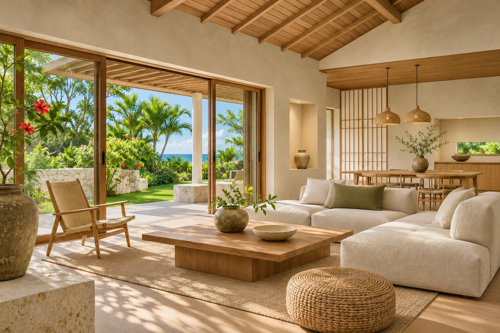
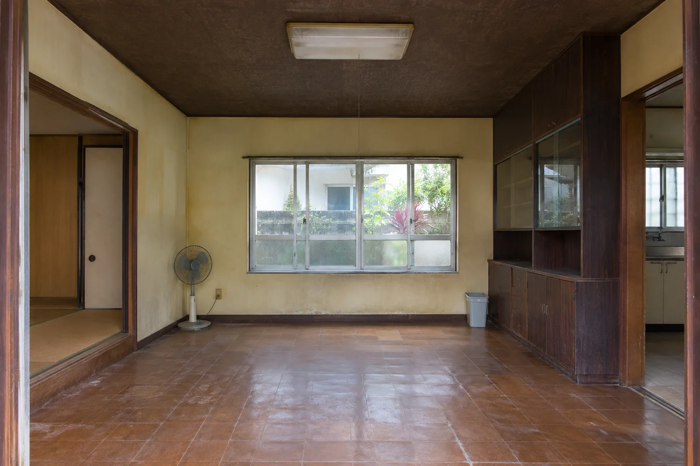

相談
いま感じている不便や希望を整理します。
A quieter way to live
壊して新しくするだけではなく、風や光、手ざわりを整えて、これからの暮らしに合う住まいへ。
架空のスタジオを想定した制作サンプル

TANE renovation
家族の変化に合わせて、間取りも過ごし方も少しずつ変わっていく。
今ある素材を生かすところ、手を入れるところ。その両方を見きわめるリノベーションスタジオを想定したウェブサイトです。住まいの悩みを相談する前に、施工事例や進め方を落ち着いて読める構成にしています。
A home, renewed
施工前の課題と、整えた後の空間を並べて紹介。写真の変化だけでなく、暮らしの中で何を変えたのかを読み進められます。


How we work
いま感じている不便や希望を整理します。
光の向きや動線、残せる部分を見ます。
暮らしに合う範囲と進め方を考えます。
選んだ内容に沿って空間を整えます。
新しい日常の使い方を確認します。